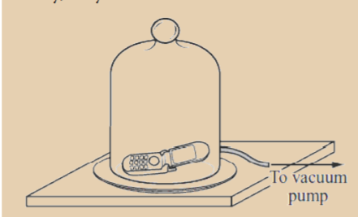
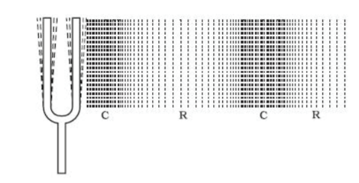
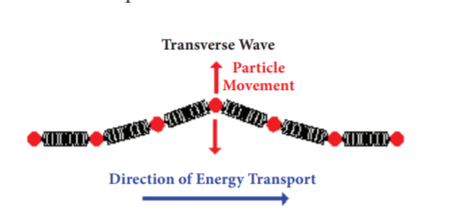
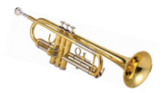
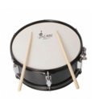
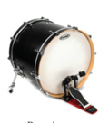
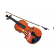
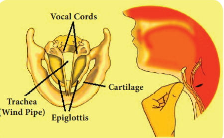
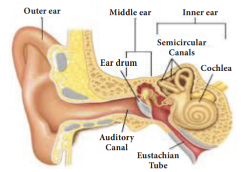

After the completion of this lesson, students will be able to:
We hear variety of sounds in our daily life. Thundering of clouds, chirping of birds, mewing of cats, rustling of leaves, music on the radio and television and noise of vehicles are some of the sounds that all of us are familiar with. Each sound has particular characteristics. Sound enables us to communicate with each other. Animals also communicate with other members of their species with the help of sound. Some sounds like music are pleasing to us and we like to hear them. But some sounds, for example noise in our surrounding is undesired. In this lesson we will study about the production and propagation of sound, human voice system, hearing, noise pollution and the ways to control it.
Sound is produced when an object is set to vibrate. Vibration means a kind of rapid to and fro motion of a particle. This to and fro motion of the particle causes the substances around it to vibrate. Thus sound spreads to the surroundings. The substance through which sound is transmitted is called medium. Sound moves through a medium from the point of generation to the listener. We can understand the production of sound with the help of some activities.
Activity 1 Take the tray of an empty match box and stretch a rubber band around it, along its length. Then, pluck the stretched rubber band with your index finger. What do you observe? Do you hear any sound?
On plucking the rubber band, it starts vibrating. You can hear a feeble humming sound as long as the rubber band is vibrating. The humming sound stops as soon as the rubber band stops vibrating. This confirms that sound is produced by vibrating particles. You can see this kind of vibrations in stringed musical instruments, such as guitar and sitar also.
Activity 2
Take a metal shallow pan. Hang it at a convenient place in such a way that it does not touch anything. Now, strike it with a stick. Touch the pan gently with your index finger. Do you feel the vibrations? Again, strike the pan with the stick and hold it tightly with your hands, immediately after striking. Do you still hear the sound?
This activity shows that vibrating pan produces sound. In this case vibrations can be felt by touching the pan. But in some cases vibrations are visible.
Activity 3 Take a metal dish, pour some water in it. Strike it at its edge with a spoon. Do you hear any sound? Again strike the dish and touch it. Can you feel the dish vibrating? Look at the surface of water. Do you see any movement on the water surface? Now, hold the dish with your hands. What change do you observe on the surface of the water?
The above activities show that sound is produced when an object is set to vibrate. The sound produced by vibration is propagated from one location to another. When it reaches our ear we hear the sound.
When you call your friend, who is standing at a distance, your friend is able to hear your voice. How your friend is able to hear your voice? He is able to hear because your sound travels from one place to another. As we saw earlier sound is a form of energy and it needs a medium to travel. This can be understood from the activity given below.
Activity 4 Take a bell jar and a mobile phone. Switch on the music in the mobile phone and place it in the jar. Now, pump out the air from the bell jar using a vacuum pump. As more and more air is removed from the jar, the sound from the mobile phone becomes feebler and finally, very faint.

It is clear from this experiment that sound cannot travel in vacuum and it needs a medium like air. Sound travels in water and solids also. The speed of sound is more in solids than in liquids and it is very less in gases.
Do you know?
Thomas Alva Edison, in 1877 invented the phonograph, a device that played the recorded sound.
Activity 5 Take two stones and strike them together and listen to the sound produced by them. Now take the stones underwater and strike them. You will find that the sound produced by the stones underwater is feeble and not very clear.
The speed of sound is the distance travelled by sound in one second. It is denoted by ‘v’. It is represented by the expression, v equal to n Lamda, where ‘n’ is the frequency and ‘Lamda’ is the wavelength.
More to know
Wavelength is the distance between two consecutive particles, which are in the same phase of vibration. It is denoted by the Greek letter ‘lambda’. The unit of wavelength is metre (m).
Frequency is the number of vibrations of a particle in the medium, in one second. It is denoted by ‘n’. The unit of frequency is hertz (Hertz).
Problem 1
A sound has a frequency of 50 Hertz and a wavelength of 10 m. What is the speed of the sound?
Solution
Given, n equal to 50 Hertz, Lamda equal to 10 m
v equal to n lambda
v equal to 50 into 10
v equal to 500 m s power minus 1
Problem 2
A sound has a frequency of 5 Hertz and a speed of 25 m s power minus 1. What is the wavelength of the sound?
Solution
Given, n equal to 5 Hertz, v equal to 25 m s power minus 1
v equal to n Lamda
Lamda equal to v by n equal to 25 by 5 equal to 5 m
The speed of sound depends on the properties of the medium through which it travels, like temperature, pressure and humidity. In any medium, as the temperature increases the speed of sound also increases. For example, the speed of sound in air is 331 m s power minus 1 at 0 degree Celsius and 344 m s power minus 1 at 22 degree Celsius. The speed of sound at a particular temperature in various medium are listed in Table 6 point 1.
Table 6 point 1 Speed of sound in different medium at 25 degree Celsius
State |
Substance |
Speed (m s power minus 1 ) |
Solids |
Aluminum |
6420 |
|
Steel |
5960 |
|
Iron |
5950 |
Liquid |
Sea Water |
1530 |
|
Distilled Water |
1498 |
Gases |
Hydrogen |
1284 |
|
Oxygen |
316 |
More to know
The amount of water vapour present in the air is known as humidity. It is less during winter and more during summer. The speed of sound increases with increase in humidity. This is because the density of air decreases with increase in humidity.
We saw that sound travels in different medium with different speed. Now let us see how it travels in a medium. When a body vibrates, the particle of the medium in contact with the vibrating body is first displaced from its equilibrium position. It then exerts a force on the adjacent particle. This process continues in the medium till the sound reaches the ear of the person.
In order to understand this let us consider a vibrating tuning fork. When a vibrating tuning fork moves forward, it pushes and compresses the air in front of it, creating a region of high pressure. This region is called a compression (C), as shown in Figure 6.1. When it moves backward, it creates a region of low pressure called rarefaction (R). These compressions and rarefactions produce the sound wave, which propagates through the medium.

Activity 6 Throw a stone into a pool of still water. It produces waves, which spread rapidly over the surface of water and they travel in all directions. Do water particles move away from the point of disturbance? Check it by placing grains of saw dust over the water. They do not move away. Instead they merely move up and down about their mean position. Similarly, sound travels in the form of a wave.
Sound is a form of energy. It is transferred through the air or any other medium, in the form of mechanical waves. Mechanical wave is a disturbance, which propagates in a medium due to the repeated periodic motion of the particles of the medium, from their mean position. The disturbance which is caused by the vibrations of the particles is passed over to the next particle. It means that the energy is transferred from one particle to another as a wave motion.
1. In wave motion, only the energy is transferred not the particles.
2. The velocity of the wave motion is different from the velocity of the vibrating particle.
3. For the propagation of a mechanical wave, the medium must possess the properties of inertia, elasticity, uniform density and minimum friction among the particles.
Do you know?
How do astronauts communicate with each other? The astronauts have devices in their helmets which transfer the sound waves from their voices into radio waves and transmit it to the ground (or other astronauts in space). This is exactly the same as how radio at your home works.
There are two types of mechanical wave. They are
1. Transverse wave
2. Longitudinal wave
Transverse wave
In a transverse wave the particles of the medium vibrate in a direction, which is perpendicular to the direction of propagation of the wave. Example Waves in strings, light waves etc. Transverse waves are produced only in solids and liquids

Longitudinal wave
In a longitudinal wave the particles of the medium vibrate in a direction, which is parallel to the direction of propagation of the wave. Example Waves in springs, sound waves in a medium. Longitudinal waves are produced in solids, liquids and also in gases.
Do you know?
The seismic wave formed during earthquake is an example for a longitudinal wave. Waves travelling through the layers of the Earth due to explosions, earthquakes and volcanic explosions are called seismic waves. Using a hydrophone and seismometer one can study these waves and record them. Seismology is the branch of science that deals with the study of seismic waves.
All sounds that we hear are not the same. There are some properties that differentiate one kind of sound from another. We will study about these properties now.
It is defined as the characteristic of a sound that enables us to distinguish a weak or feeble sound from a loud sound. The loudness of a sound depends on its amplitude. Higher the amplitude louder will be the sound and vice versa. When a drum is softly beaten, a weak sound is produced. However, when it is beaten strongly, a loud sound is produced. The unit of loudness of sound is decibel (d B).
More to know
Amplitude is the maximum displacement of a vibrating particle from its mean position. It is denoted by ‘A’. The unit of amplitude is ‘metre’ (m).
The pitch is the characteristic of sound that enables us to distinguish between a flat sound and a shrill sound. Higher the frequency of sound, higher will be the pitch. High pitch adds shrillness to a sound. The sound produced by a whistle, a bell, a flute and a violin are high pitch sounds.
Normally, the voice of a female has a higher pitch than a male. That is why a female’s voice is shriller than a male’s voice. Some examples of low pitch sound are the roar of a lion and the beating of a drum.
The quality or timbre is the characteristic of sound that enables us to distinguish between two sounds that have the same pitch and amplitude. For example, in an orchestra, the sounds produced by some musical instruments may have the same pitch and loudness. Yet, you can distinctly identify the sound produced by each instrument.
According to the frequency we can classify the sounds into three types. They are:
Audible sound
Sound with frequency, ranging from 20 Hertz to 20000 Hertz is called sonic sound or audible sound. Sound with this frequency range alone can be heard by the human beings. Human ears cannot hear sounds with frequencies below 20 Hertz or above 20000 Hertz. So, the above range is called as audible range of sound.
Infrasonic sound
A sound with a frequency, below 20 Hertz is called as subsonic or infrasonic sound. Humans cannot hear the sound of this frequency, but some animals like dog, dolphin, etc., can hear. Uses of infrasonic sound are:
Ultrasonic sound
A sound with a frequency greater than 20000 Hertz is called as ultrasonic sound. Animals such as bats, dogs, dolphins, etc., are able to hear certain ultrasonic sounds as well. Some of the uses of ultrasonic sounds are:
Do you know?
A bat can hear the sounds of frequencies higher than 20,000Hertz. Bats produce ultrasonic sound during screaming. These ultrasonic waves help them to locate their way and the prey.
Some sounds are pleasing to the ear and make us happy. The sound that provides a pleasing sensation to the ear is called ‘music’. Music is produced by the regular patterns of vibrations. Musical instruments are categorized into four types as given below.
Wind instruments
In a wind instrument the sound is produced by the vibration of air in a hollow tube. The frequency is varied by changing the length of the vibrating air column. Trumpet, Flute, Shehnai and Saxophone are some well-known wind instruments.
Reed instruments
A reed instrument contains a reed. Air, which is blown through the instrument, causes the reed to vibrate, which in turn produces the specific sound. Examples of reed instruments include Harmonium and Mouth Organ.
Stringed instruments
Stringed instruments make use of a string or wire to produce vibrations and hence the specific sound. These instruments also have hollow boxes that amplify the sound that is produced. The frequency of sound is varied by varying the length of the vibrating wire. Violin, Guitar, Sitar are some of the examples of stringed instruments.
A guitar string has a number of frequencies at which it will naturally vibrate. These natural frequencies are known as the harmonics of the guitar string. The natural frequency, at which an object vibrates, depends upon the tension of the string, the linear density of the string and the length of the string.
Percussion instruments
Percussion instruments produce a specific sound when they are struck, scrapped or clashed together. They are the oldest type of musical instruments. There is an amazing variety of percussion instruments all over the world. Percussion instruments like the drum and tabla consist of a leather membrane, which is stretched across a hollow box called the resonator. When a membrane is hit, it starts vibrating and produces the sound.




In human being, the sound is produced in the voice box, called the larynx, which is present in the throat. It is located at the upper end of the windpipe. The larynx has two ligaments called ‘vocal cords’, stretched across it. The vocal cords have a narrow slit through which air is blown in and out. When a person speaks, the air from the lungs is pushed up through the trachea to the larynx. When this air passes through the slit, the vocal cords begin to vibrate and produce a sound. By varying the thickness of the vocal cords, the length of the air column in the slit can be changed. This produce sounds of different pitches. Males generally have thicker and longer vocal cords that produce a deeper, low pitch sound in comparison with females.

Ear is the important organ for all animals to hear a sound. We are able to hear sound through our ears. Human ear picks up and interprets high frequency vibrations of air. Ears of aquatic animals are designed to pick up high frequency vibrations in water. The outer and visible part of the human ear is called pinna (curved in shape). It is specially designed to gather sound from the environment, which then reaches the ear drum (tympanic membrane) through the ear canal. When the sound wave strikes the drum, the ossicles move inward and outward to create the vibrations. These vibrations are then picked up by special types of cells in the inner ear. From the inner ear the vibrations are sent to the brain in the form of signals. The brain perceives these signals as sounds.

Any sound that is unpleasant to the ear is called noise. It is the unwanted, irritating and louder sound. Noise is produced by the irregular and non-periodic vibrations. Noise gives us stress. The disturbance produced in the environment by loud and harsh sounds from various sources is known as noise pollution. Busy roads, airplanes, electrical appliances such as mixer grinder, washing machine and un-tuned radio cause noise pollution. Use of loudspeakers and crackers during the festivals also contributes to the noise pollution. The major source of noise pollution is from the industries. Noise pollution is the bi-product of industrialisation, urbanisation and modern civilisation.
Noise creates some health hazards. Some of them are listed below.
Noise may cause irritation, stress,nervousness and headache.
We studied about the harmful effects of noise pollution. It becomes necessary for us to reduce it. Noise pollution can be significantly reduced by adopting the following steps.
You may have hearing loss without realising it. The following are the symptoms of hearing loss.
Hearing loss is caused by various reasons. Some of them are listed below.
Amplitude - The measure of a sound waves.
Pitch - How high or low a sound is. It is determined by the frequency of the vibration.
Sonic Boom - A shock wave that consists of compressed sound waves created when something moves faster than the speed of sound.
Sound Wave - Moving pattern of high and low pressure or vibrations.
Speed of Sound - How fast sound moves through an object.
Vibration - Back and forth motion.
Wavelength - The length between the compressions in a sound wave.